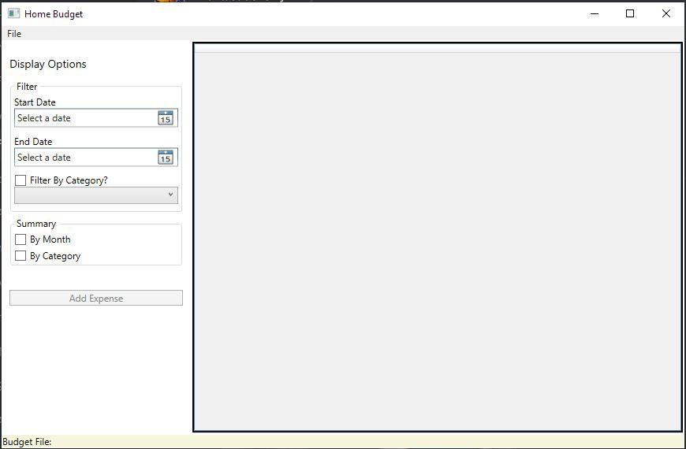
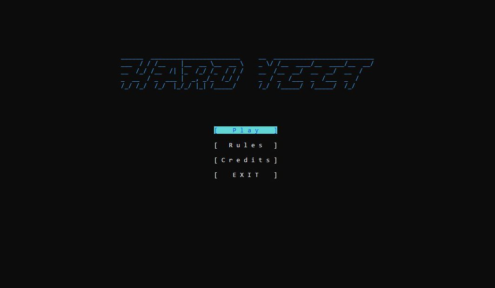
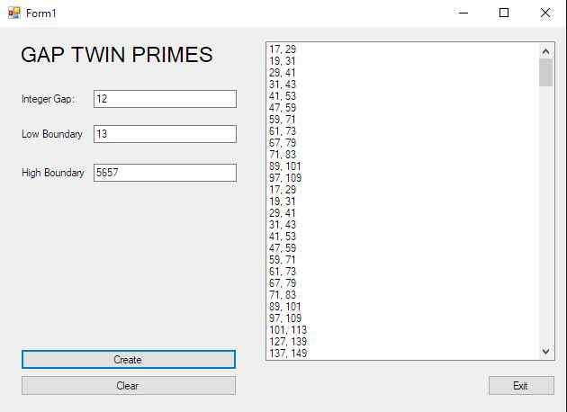

Who am I?
I'm a full time computer science student at John Abbott College, Montreal, Canada.
Interests
- Simulations
- Machine Learning
- Rendering
- Game Design
Hobbies
- Fencing
- Gaming
- Dungeons & Dragons
- Drawing
- Piano
Projects
Home Budget App

This was a an exercise in responsive windows apps and database fetching made for the UI course of Winter 2019 with Helen Katalifos.
Coded with the WPF Framework, the dynamic UI form display was made with XAML markup and the backend was made with C#.
Hardyeet

This was a game project made for the Programming I course of Fall 2018 with Larry Fagen, with love...
This was a pure .NET Console app with simple 2d display. Functional programming and object-oriented principles were used to create a fast-paced game where a player character would have to rush for food items to eat enemies on screen before they ate the player. Simple AI logic and rendering were all done from scratch. It was fun.
Gap Twin Primes

This was an exercise in subscripted control flow for the Algorithm Design course of Fall 2019 with Daniel Grete.
A really cool algorithm that takes 3 values: gap, low, high; and prints all of the prime number pairs seperated by gap within that low-high range. It can generate a list of prime-gap pairs up to 500'000'000 in under 2 seconds. Very neat.
Education
John Abbott College
2018 - Present
- Computer Science Honors Fall 2018
- Computer Science Honors Winter 2019
- English Tutoring
Secondaire Felix-Leclerc
2013 - 2018
- Honors Portfolio